01Цель работы и исходные данные
В ВКР сравниваются два варианта металлоконструкции перегружателя, а в исследовательской части изучается концентрация напряжений в сварных узлах трубчатой фермы.
Цель обзора
Проанализировать состояние вопроса по теме ВКР и сформулировать задачи проектирования и исследования.
Объект
Металлические конструкции грейферных перегружателей и кранов мостового типа.
Предмет
Коробчатые и ферменные пролетные строения, узлы из прямоугольных труб, методы расчета и оптимизации.
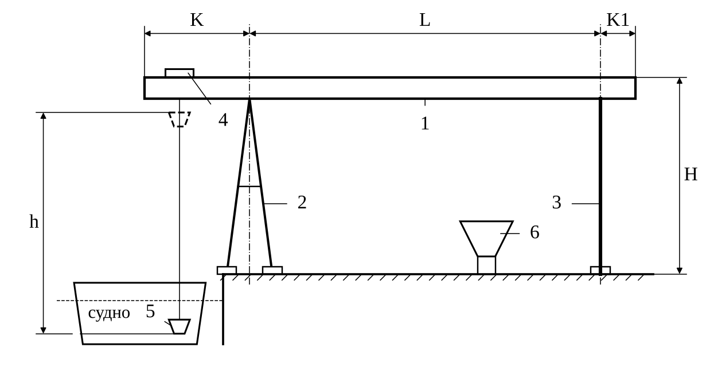
1 – пролетное строение; 2 – жесткая опора; 3 – гибкая опора; 4 – грузовая тележка; 5 – грейфер (штриховой линией показано верхнее положение); 6 – приемный бункер
| Параметр | Значение |
|---|---|
| Грузоподъемность | 16 т |
| Группа классификации (режим работы) крана | A7 |
| Режим работы механизма подъема | M6 |
| Режим работы механизма передвижения крана | M4 |
| Режим работы механизма передвижения тележки | M6 |
| Пролет L | 40 м |
| Вылет консоли K | 12 м |
| Вылет консоли K1 | 4 м |
| Высота крана H | 20 м |
| Высота подъема h | 28 м |
| Скорость подъема V1 | 0,5 м/с |
| Скорость передвижения крана V2 | 1,0 м/с |
| Скорость передвижения тележки V3 | 2,0 м/с |
| Варианты металлоконструкции | 1) коробчатая; 2) ферменная из прямоугольных труб |
02Структура обзора и источники
Обзор оформлен как одна глава ВКР и выполнен по двум направлениям, предложенным научным руководителем: конструкции и методы проектирования.
- 1.1 Грейферные перегружатели речных портов
- 1.2 Нормативная база проектирования
- 1.3 Обзор конструкций пролетных строений
- 1.4 Обзор методов проектирования
- 1.5 Патентный обзор
- 1.6 Выводы по главе
источников в списке
статей в отечественных и зарубежных журналах
стандартов ГОСТ и ISO
патентов и авторских свидетельств
Поиск выполнялся в научной электронной библиотеке eLIBRARY.RU, на платформах КиберЛенинка, ScienceDirect и SpringerLink, патенты искались в базах ФИПС и Google Patents.
03Нормативная база
Основной документ для расчета металлоконструкции: ГОСТ 33169-2022, разработанный с учетом ISO 20332:2016, EN 13001-3-1 и FEM 1.001 [12]. Узлы ферм из прямоугольных труб в крановых стандартах отдельно не регламентированы, для них применяются ISO 14347, руководства CIDECT и рекомендации IIW [13, 15, 16].
| Документ | Область применения в ВКР |
|---|---|
| ГОСТ 34017-2016 | Группа классификации крана A7 и режимы механизмов M4-M6 |
| ГОСТ 32579.1-2013, ГОСТ 32579.5-2013 | Расчетные нагрузки и комбинации нагрузок для крана мостового типа |
| ГОСТ 32578-2013 | Выбор стали для элементов металлоконструкции |
| ГОСТ 33169-2022 | Подтверждение прочности, устойчивости и сопротивления усталости |
| ISO 14347:2008 | Расчет на усталость сварных узлов ферм из прямоугольных труб |
| CIDECT № 3, № 8 | Конструирование узлов из прямоугольных труб, коэффициенты концентрации напряжений |
| Рекомендации IIW | Методы расчета сварных соединений на усталость |
04Обзор конструкций
Металлоконструкция составляет основную часть массы перегружателя: у ПМГ-20 грузоподъемностью 20 т это 376,5 т из 615 т, около 61 % [7].
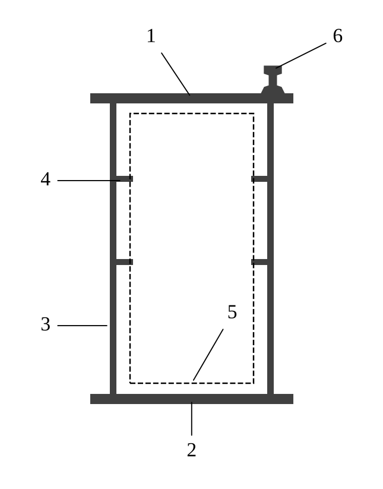
1 – верхний пояс; 2 – нижний пояс; 3 – стенка; 4 – продольное ребро; 5 – диафрагма; 6 – подтележечный рельс
Коробчатая балка жесткая на изгиб и кручение и хорошо подходит для автоматической сварки, но тяжелее: толщины листов часто определяет местная устойчивость [17, 18]. Слабым местом остаются сварные узлы: в местах ремонта верхнего пояса повторно возникали усталостные трещины, а выводные планки повысили усталостную прочность на 25-35 % [19].
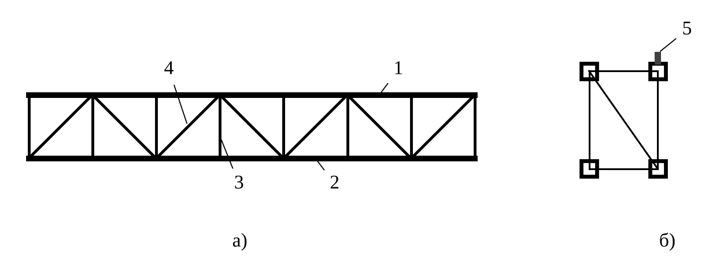
а – вертикальная ферма; б – сечение пространственной балки; 1, 2 – пояса; 3 – стойка; 4 – раскос; 5 – рельс
Ферма из прямоугольных труб легче и меньше воспринимает ветер, сжатые стержни устойчивы, плоские грани удобны для примыкания раскосов [14, 20]. Но каждый сварной узел является концентратором напряжений.
Узлы ферм из прямоугольных труб
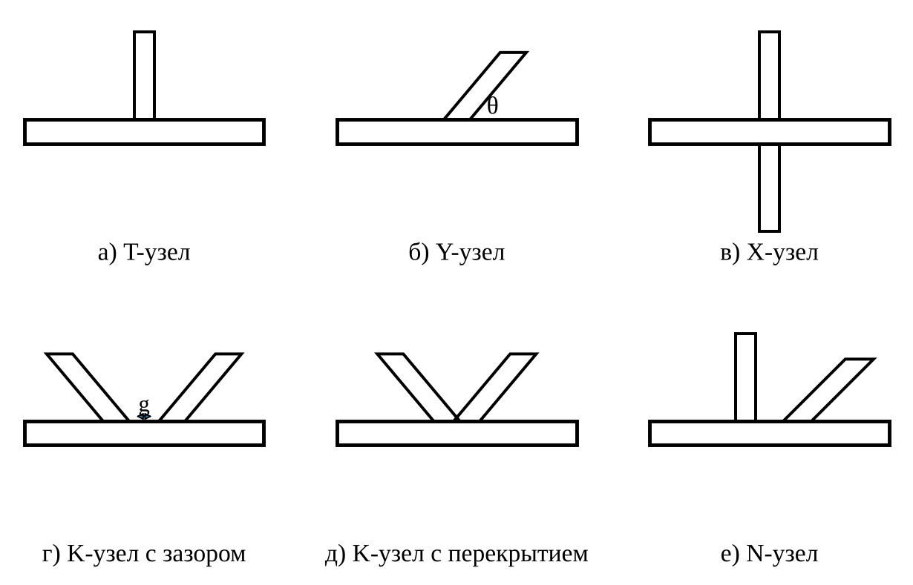
g – зазор между раскосами; θ – угол примыкания раскоса к поясу
Наибольшие местные напряжения у края сварного шва возникают у углов профиля раскоса, где стенка жестче. Узлы с перекрытием раскосов имеют большую усталостную долговечность, чем узлы с зазором, хотя узлы с зазором проще в изготовлении [21].
| Критерий | Коробчатая конструкция | Ферма из прямоугольных труб |
|---|---|---|
| Масса | Больше, толщины листов часто определяются местной устойчивостью | Меньше за счет работы стержней преимущественно на растяжение и сжатие |
| Ветровая нагрузка | Большая площадь сплошной стенки | Меньше за счет сквозной решетки |
| Жесткость | Высокая изгибная и крутильная жесткость | Зависит от схемы решетки и жесткости узлов |
| Сварные узлы | Протяженные поясные швы, диафрагмы, ребра | Большое число узлов, каждый из которых является концентратором напряжений |
| Изготовление | Хорошо автоматизируется | Фигурная резка торцов раскосов, сварка по контуру примыкания |
| Определяющий вид отказа при режиме A7 | Усталостные трещины в местах приварки диафрагм и в стыках | Усталостные трещины у края сварного шва в узлах |
05Обзор методов проектирования
Нормы
ГОСТ 33169-2022: усталость по номинальным напряжениям и пределам выносливости узлов; допускается МКЭ с осреднением напряжений [12].
Метод конечных элементов
Стержневая модель отличается от детальной модели ANSYS примерно на 3 % по напряжениям; для узлов нужны оболочечные модели [7, 24].
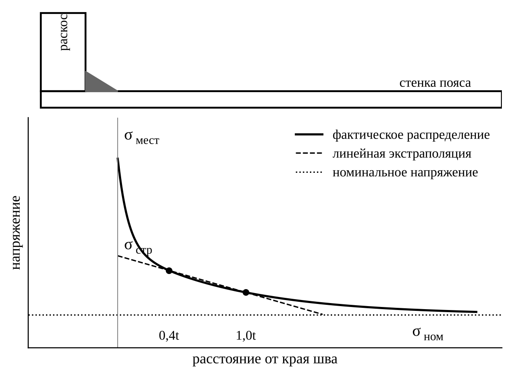
σном – номинальное; σстр – структурное; σмест – местное напряжение у края шва; t – толщина стенки
06Патентный обзор
Патенты показывают два направления развития: повышение ресурса сварных балок и новые решения ферменных балок.
| Номер, страна | Название | Сущность решения |
|---|---|---|
| SU 1648884 A1 [33] | Подкрановый путь (авторское свидетельство) | Балка коробчатого сечения с ребрами жесткости из сегментов трубы, вваренными во внутренние углы короба; цель: снижение металлоемкости |
| RU 2527597 C2 [34] | Способ повышения ресурса подкрановой балки | Замена сварных соединений ребер и тормозной балки в зоне под рельсом высокоресурсными болтовыми соединениями |
| RU 2654840 C1 [35] | Пролетная балка для мостового или козлового крана | Пространственная ферма с разъемно присоединенными пластинчатыми раскосами |
| US 9540216 B2 [36] | Кран с ферменной балкой и плоскими раскосами | Раскосы и стойки выполнены плоскими с отогнутыми боковыми полками и приварены к внутренним сторонам поясов |
| US 9796565 B2 [37] | Кран мостового или козлового типа с ферменной балкой | Концевые адаптеры, привариваемые к поясам фермы после выверки, позволяют компенсировать неточности изготовления |
07Выводы по главе и задачи ВКР
Выводы
- металлоконструкция составляет большую часть массы перегружателя, поэтому выбор ее типа и оптимизация сечений дают основной резерв снижения массы машины [7]
- коробчатая конструкция проще в изготовлении и надежнее по узлам, ферменная из прямоугольных труб легче и меньше воспринимает ветровую нагрузку, но содержит много сварных узлов, являющихся концентраторами напряжений [3, 14, 15]
- для кранов тяжелых режимов работы ресурс определяется усталостью сварных узлов, а не статической прочностью, что подтверждается опытом эксплуатации и патентными решениями [12, 19, 16, 34]
- ГОСТ 33169-2022 рассчитывает усталость по номинальным напряжениям и пределам выносливости узлов, а методы структурных и местных напряжений у края сварного шва развиваются в международных рекомендациях и в работах отечественных авторов [12, 15, 16, 29]
- стержневые модели достаточны для общего расчета, а для оценки узлов необходимы детальные конечно-элементные модели [7, 24]
- параметрические формулы коэффициентов концентрации для узлов из прямоугольных труб имеют ограниченную область применения и в одних случаях занижают, а в других завышают напряжения [21, 22, 32]
Задачи ВКР
- разработать коробчатый и ферменный варианты металлоконструкции перегружателя по исходным данным задания
- выполнить расчет вариантов на прочность, жесткость, упругую устойчивость и сопротивление усталости по ГОСТ 33169-2022
- сравнить варианты по массе и технологичности изготовления
- исследовать концентрацию напряжений в узлах ферменного варианта на детальной конечно-элементной модели и сопоставить результаты с параметрическими формулами CIDECT № 8 и ISO 14347
- разработать рекомендации по конструированию узлов с наименьшей концентрацией напряжений
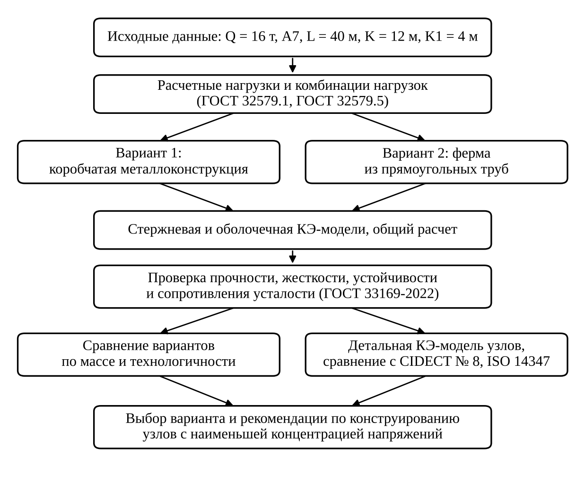
08Презентация
Доклад по литературному обзору, дисциплина «История и методология науки». Листать можно кнопками или стрелками на клавиатуре.
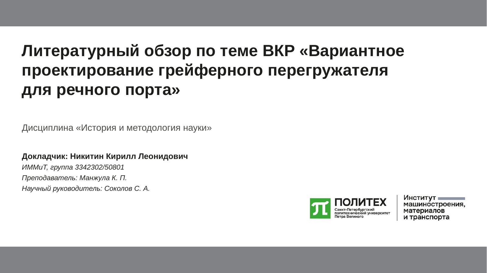
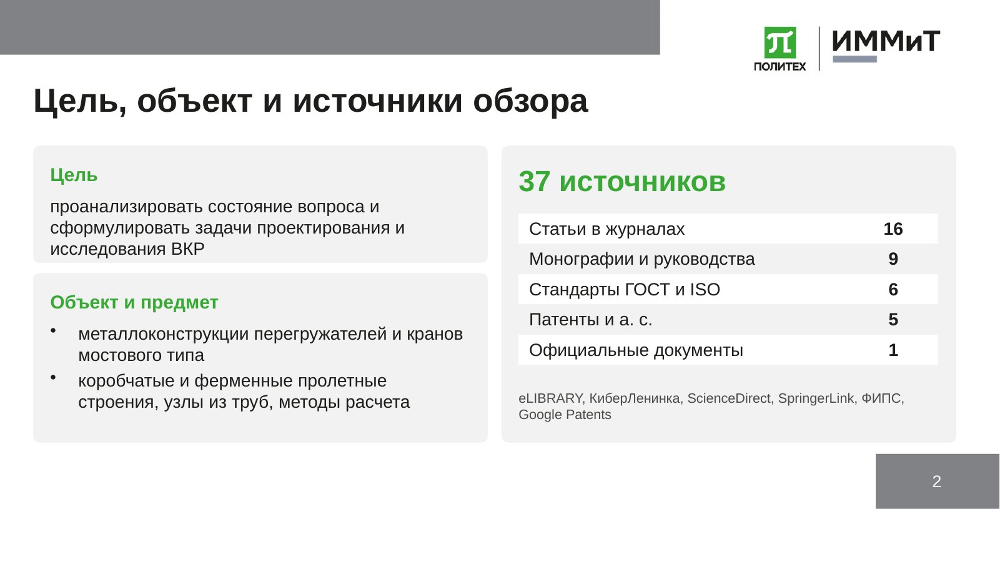
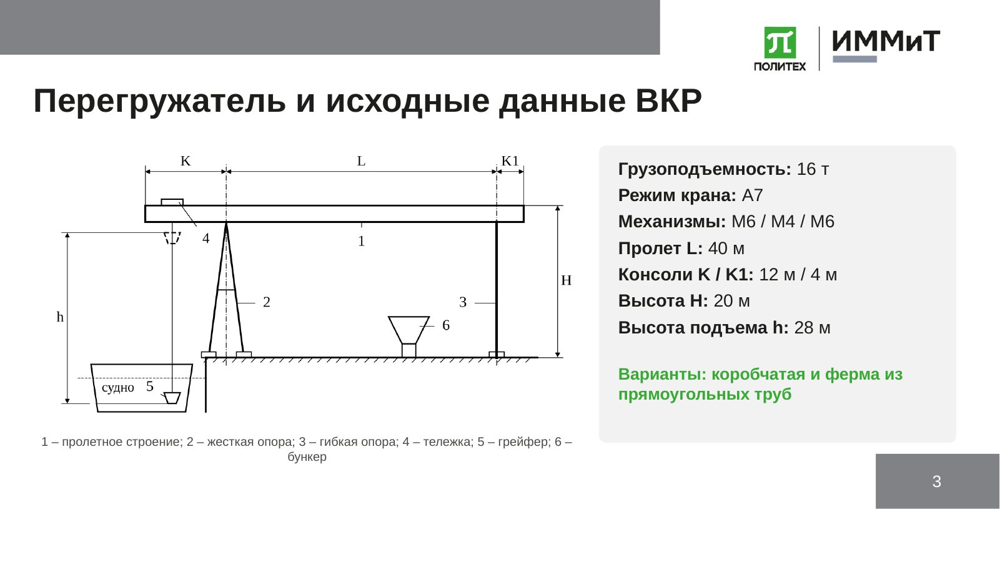
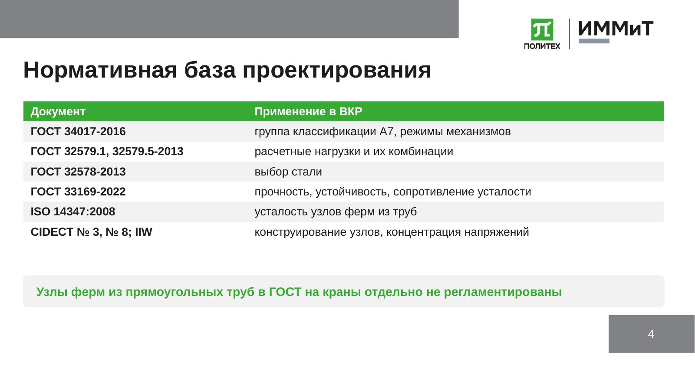
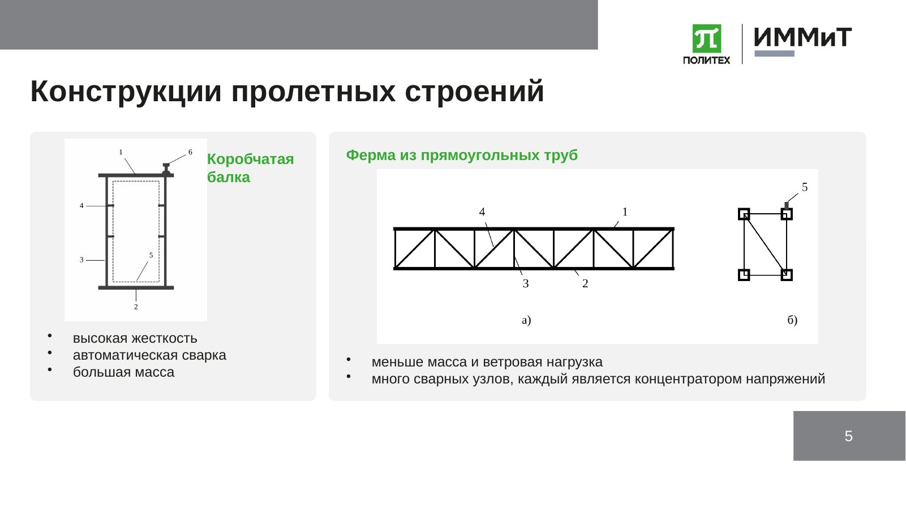
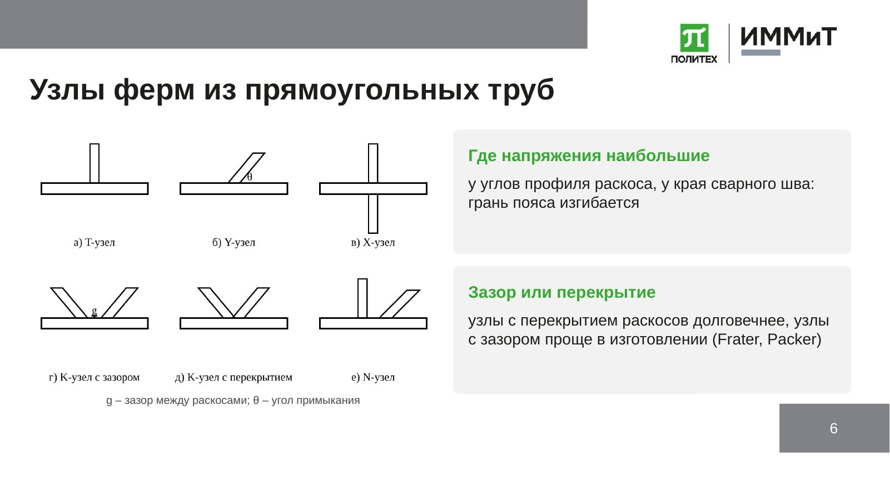
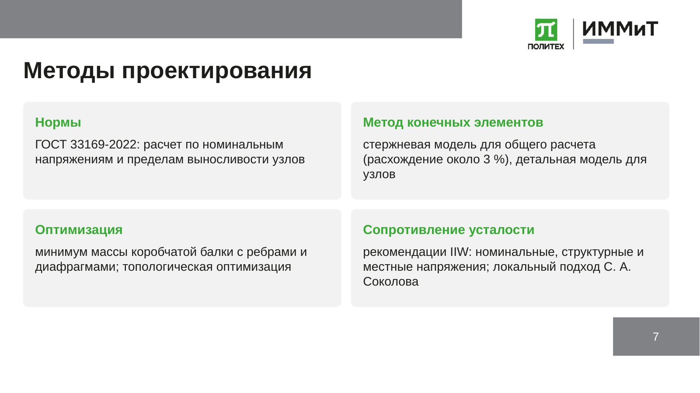
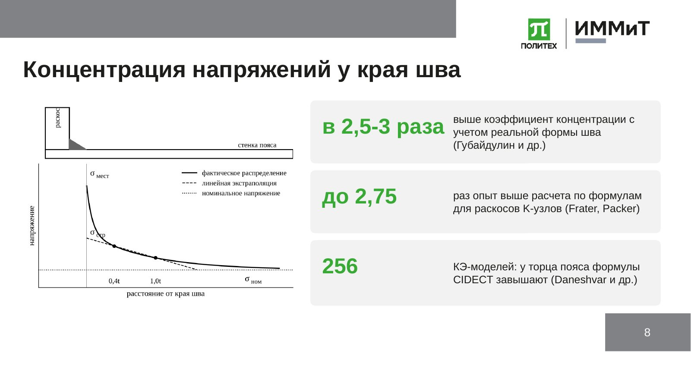
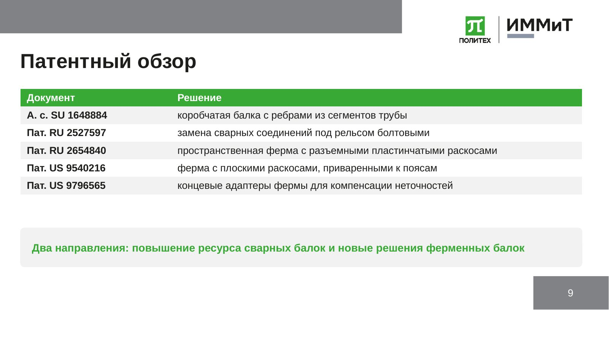
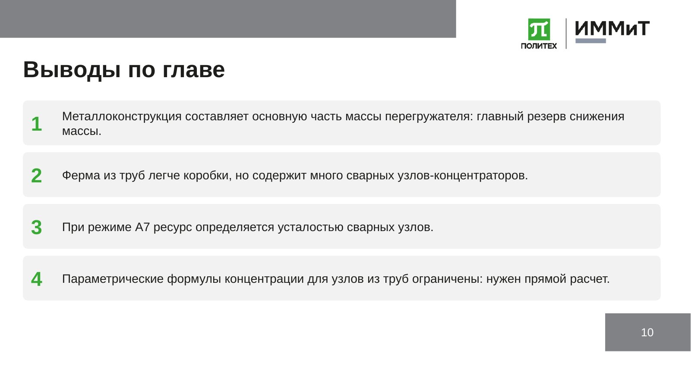
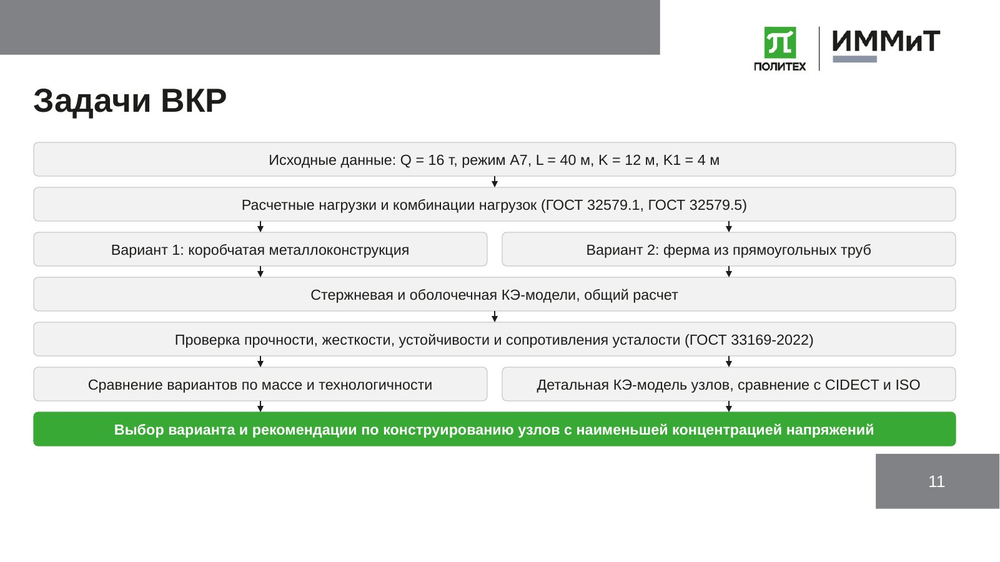
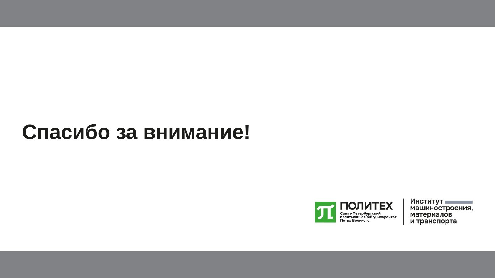
10Список использованных источников
Оформлен по ГОСТ Р 7.0.100-2018, нумерация соответствует реферату.
- Стратегия развития внутреннего водного транспорта Российской Федерации на период до 2030 года : утверждена распоряжением Правительства Российской Федерации от 29 февраля 2016 г. № 327-р. – Текст : электронный // Министерство транспорта Российской Федерации : официальный сайт. – URL: https://mintrans.gov.ru/file/401139 (дата обращения: 08.11.2026).
- Беглов, Б. В. Мостовые перегружатели / Б. В. Беглов, П. И. Кох, В. И. Онищенко. – Москва : Машиностроение, 1974. – 224 с. – Текст : непосредственный.
- Гохберг, М. М. Металлические конструкции подъемно-транспортных машин / М. М. Гохберг. – Ленинград : Машиностроение, 1976. – 453 с. – Текст : непосредственный.
- Соколов, С. А. Металлические конструкции подъемно-транспортных машин : учеб. пособие / С. А. Соколов. – Санкт-Петербург : Политехника, 2005. – 423 с. – Текст : непосредственный.
- Соколов, С. А. Строительная механика и металлические конструкции машин : учебник / С. А. Соколов. – Санкт-Петербург : Политехника, 2011. – Текст : непосредственный.
- Вершинский, А. В. Строительная механика и металлические конструкции / А. В. Вершинский, М. М. Гохберг, В. П. Семенов. – Ленинград : Машиностроение, 1984. – 232 с. – Текст : непосредственный.
- Гусев, Ю. Б. К вопросу об оптимальном синтезе элементов мостовых перегружателей / Ю. Б. Гусев, А. Ю. Танченко. – Текст : непосредственный // Вестник Национального технического университета «ХПИ». Тематический выпуск: Машиноведение и САПР. – 2008. – С. 45-68.
- ГОСТ 34017-2016. Краны грузоподъемные. Классификация режимов работы : межгосударственный стандарт : издание официальное : введ. впервые : дата введ. 2018-01-01. – Москва : Стандартинформ, 2017. – Текст : непосредственный.
- ГОСТ 32579.1-2013. Краны грузоподъемные. Принципы формирования расчетных нагрузок и комбинаций нагрузок. Часть 1. Общие положения : межгосударственный стандарт : издание официальное : дата введ. 2015-06-01. – Москва : Стандартинформ, 2015. – Текст : непосредственный.
- ГОСТ 32579.5-2013. Краны грузоподъемные. Принципы формирования расчетных нагрузок и комбинаций нагрузок. Часть 5. Краны мостового типа : межгосударственный стандарт : издание официальное : дата введ. 2015-06-01. – Москва : Стандартинформ, 2015. – Текст : непосредственный.
- ГОСТ 32578-2013. Краны грузоподъемные. Металлические конструкции. Требования к материалам : межгосударственный стандарт : издание официальное : дата введ. 2015-06-01. – Москва : Стандартинформ, 2015. – Текст : непосредственный.
- ГОСТ 33169-2022. Краны грузоподъемные. Металлические конструкции. Подтверждение несущей способности : межгосударственный стандарт : издание официальное : взамен ГОСТ 33169-2014 : дата введ. 2023-03-01. – Москва : Российский институт стандартизации, 2022. – Текст : непосредственный.
- ISO 14347:2008. Fatigue – Design procedure for welded hollow-section joints – Recommendations : international standard. – Geneva : ISO, 2008. – Direct text.
- Design guide for rectangular hollow section (RHS) joints under predominantly static loading / J. A. Packer, J. Wardenier, X.-L. Zhao [et al.]. – 2nd ed. – Geneva : CIDECT, 2009. – (Construction with hollow steel sections ; 3). – Direct text.
- Design guide for circular and rectangular hollow section welded joints under fatigue loading / X.-L. Zhao, S. Herion, J. A. Packer [et al.]. – Köln : TÜV-Verlag, 2001. – 121 p. – (Construction with hollow steel sections ; 8). – ISBN 3-8249-0565-5. – Direct text.
- Hobbacher, A. F. Recommendations for fatigue design of welded joints and components / A. F. Hobbacher. – 2nd ed. – Cham : Springer, 2016. – XVI, 143 p. – (IIW Collection). – DOI 10.1007/978-3-319-23757-2. – Direct text.
- Барановская, Л. В. Определение экстремальных значений компонентов напряженно-деформированного состояния крановых металлоконструкций коробчатого сечения градиентными методами / Л. В. Барановская, Н. М. Чернова. – Текст : непосредственный // Горное оборудование и электромеханика. – 2019. – № 5. – С. 3-7.
- Грачев, А. А. Устойчивость пластин с ребрами / А. А. Грачев, С. А. Соколов. – Текст : непосредственный // Научно-технические ведомости СПбГПУ. – 2010. – № 4 (110). – С. 200-204.
- Шепотько, В. П. Анализ конструктивного исполнения главных балок грузоподъемных кранов / В. П. Шепотько, П. А. Гавриш. – Текст : непосредственный // Восточно-Европейский журнал передовых технологий. – 2013. – Т. 2, № 7 (62). – С. 64-66. – DOI 10.15587/1729-4061.2013.12392.
- Hollow sections in structural applications / J. Wardenier, J. A. Packer, X.-L. Zhao, G. J. van der Vegte. – 2nd ed. – Geneva : CIDECT, 2010. – Direct text.
- Frater, G. S. Strain concentration factors in rectangular hollow section truss gap K-connections: an experimental study / G. S. Frater, J. A. Packer. – Direct text. // Journal of Constructional Steel Research. – 1993. – Vol. 24. – P. 77-104.
- Губайдулин, Р. Г. Исследование напряженного состояния сварных соединений бесфасоночных трубчатых узлов / Р. Г. Губайдулин, А. К. Тиньгаев, В. А. Лупин. – Текст : непосредственный // Вестник ЮУрГУ. Серия: Металлургия. – 2012. – Вып. 18, № 15. – С. 31-36.
- Гусев, Ю. Б. К вопросу моделирования напряженно-деформированного состояния металлоконструкции углеперегружателя / Ю. Б. Гусев, А. В. Литвиненко, А. Ю. Танченко. – Текст : непосредственный // Вестник Национального технического университета «ХПИ». Тематический выпуск: Транспортное машиностроение. – 2007. – № 33. – С. 41-45.
- Дульгер, Н. В. Конечно-элементная модель перегрузочного крана КПП 16/32т для перевалки грузов в речных и морских портах / Н. В. Дульгер, А. В. Кораблин. – Текст : непосредственный // Вестник Астраханского государственного технического университета. Серия: Морская техника и технология. – 2023. – № 4. – С. 104-114. – DOI 10.24143/2073-1574-2023-4-104-114.
- Многовариантный расчет механизма подъема груза крана мостового типа на ЭВМ / П. В. Витчук, В. А. Ермоленко, И. Д. Стадникова [и др.]. – Текст : непосредственный // Научно-технический вестник Брянского государственного университета. – 2022. – № 4. – С. 282-290. – DOI 10.22281/2413-9920-2022-08-04-282-290.
- Ren, Y. Mass optimization of crane box girder considering both ribs and diaphragms using APDL / Y. Ren, X. Liu, B. Wang. – Direct text. // International Journal of Steel Structures. – 2024. – Vol. 24, № 3. – P. 672-692. – DOI 10.1007/s13296-024-00846-3.
- Гнездилов, С. Г. Топологическая оптимизация на примере стрелы башенного крана / С. Г. Гнездилов, А. Н. Шубин. – Текст : непосредственный // Механизация строительства. – 2017. – Т. 78.
- Wu, Y. Fatigue life prediction of welded box girder structures / Y. Wu, W. Li, Q. Lan. – Direct text. // Advances in Mechanical Engineering. – 2017. – Vol. 9, № 10. – DOI 10.1177/1687814017728838.
- Sokolov, S. A. Analysis of the fatigue strength of welds in terms of local stress / S. A. Sokolov. – Direct text. // Russian Engineering Research. – 2018. – Vol. 38, № 3. – P. 151-156. – DOI 10.3103/S1068798X18030218.
- Методы определения локальных напряжений в сварных соединениях труб (обзор) / П. Н. Ткач, А. В. Молтасов, И. Г. Ткач, С. Н. Прокопчук. – Текст : непосредственный // Автоматическая сварка. – 2019. – № 3. – С. 55-63.
- Van Wingerde, A. M. SCF formulae for fatigue design of K-connections between square hollow sections / A. M. van Wingerde, J. A. Packer, J. Wardenier. – Direct text. // Journal of Constructional Steel Research. – 1997. – Vol. 43, № 1-3. – P. 87-118.
- Daneshvar, S. Stress concentration factors for RHS-to-RHS X-connections near an open chord end / S. Daneshvar, M. Sun, K. Tousignant. – Direct text. // Journal of Constructional Steel Research. – 2020. – Vol. 175. – Art. 106352.
- А. с. 1648884 СССР. Подкрановый путь : заявл. 15.08.1988 : опубл. 15.05.1991 / Кутищев В. П., Кутищев Е. В., Шалыганов А. В. ; заявитель Союзный строительно-монтажный трест «Южуралэнергострой». – Текст : непосредственный.
- Пат. 2527597 Российская Федерация, МПК B66C 6/00. Способ повышения ресурса подкрановой балки : № 2012115974 : заявл. 19.04.2012 : опубл. 10.09.2014 / Нежданов К. К., Нежданов А. К., Курткезов Д. Х. ; патентообладатель Пензенский государственный университет архитектуры и строительства. – Текст : непосредственный.
- Пат. 2654840 Российская Федерация. Пролетная балка для мостового или козлового крана и грузоподъемный кран, содержащий такую пролетную балку : заявл. 21.05.2015 : опубл. 22.05.2018 / Нолль Ш., Крайснер Р., Пассманн К., Шульте Ф., Шлирбах-Кноблох Т. – Текст : непосредственный.
- Pat. US 9540216 B2 United States. Crane having a truss girder with flattened braces : appl. 28.03.2013 : publ. 10.01.2017 / Paßmann C., Kreisner R., Karden M., Schlierbach-Knobloch T. ; assignee Terex MHPS IP Management GmbH. – URL: https://patents.google.com/patent/US9540216B2 (date of the application 08.11.2026). – Text : electronic.
- Pat. US 9796565 B2 United States. Crane, in particular an overhead crane or gantry crane, having at least one crane girder : appl. 28.03.2013 : publ. 24.10.2017 / Paßmann C., Kreisner R., Karden M., Schlierbach-Knobloch T. ; assignee Terex MHPS GmbH. – URL: https://patents.google.com/patent/US9796565B2 (date of the application 08.11.2026). – Text : electronic.